A Grande Jornada do Povo Hebreu
A história do povo hebreu
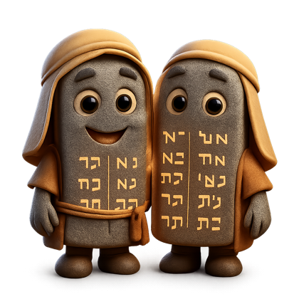
Como conhecemos essa história?
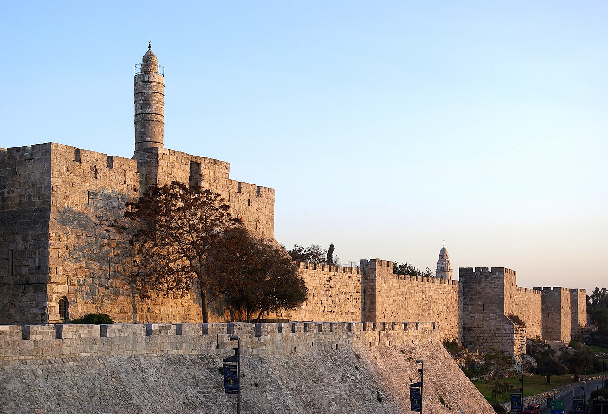
Os arqueólogosprocuram evidências (marcas, sinais ou vestígios) em escavações: construções, objetos e ferramentas enterrados. Assim conhecemos a história do povo hebreu desde cerca de 2.000 a.C.. Outra fonte muito importante é a Bíblia (que os cristãos chamam de Antigo Testamento).
A origem: Abraão sai de Ur
Tudo começou com Abraão, que morava em Ur, na Mesopotâmia. Deus mandou ele sair de sua terra e ir para uma terra nova (Canaã), prometendo fazer dele um grande povo. Abraão obedeceu e percorreu quase 2 mil km até Canaã, onde viveu junto dos cananeus.

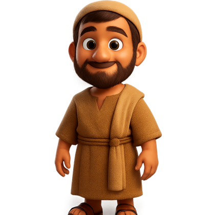
A família que virou um povo
- Abraão + Sarativeram Isaque.
- Isaque + Rebecagêmeos Esaú e Jacó.
- Jacóteve 12 filhose ganhou o novo nome Israel. Seus filhos formaram as 12 tribos de Israel.
Egito, escravidão e a fuga no deserto
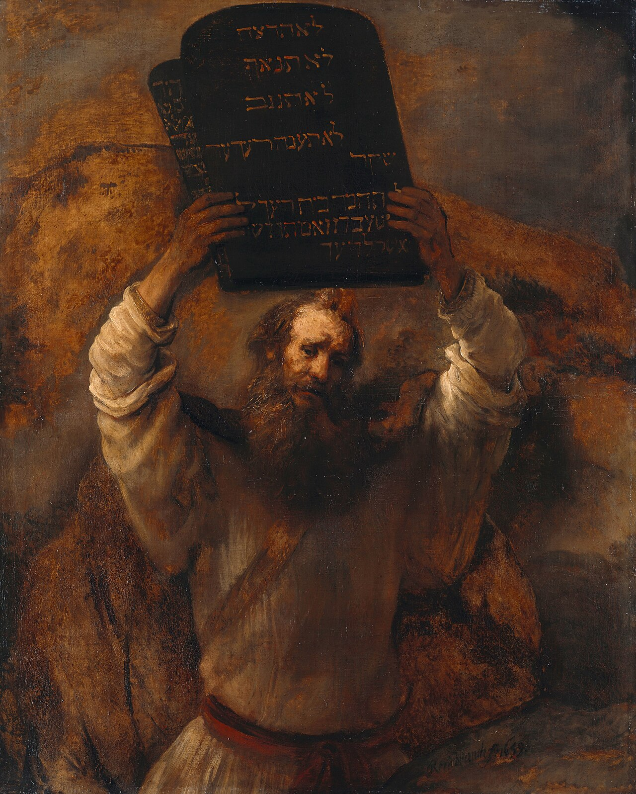
Por causa de uma grande fome, a família foi para o Egito. Lá ficaram 430 anos escravizados. Depois, Moiséslibertou o povo, que caminhou 40 anos no desertoaté chegar de volta a Canaã, a Terra Prometida. No caminho, Moisés recebeu de Deus as Tábuas da Lei (os Dez Mandamentos).
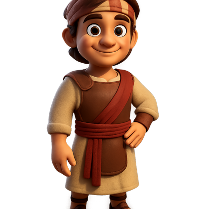
A Terra Prometida (Canaã)
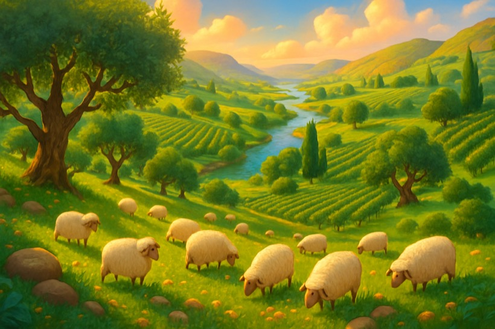
Canaã abrangia terras que hoje fazem parte de Síria, Líbano, Jordânia, Israel e Egito. Tinha geografia bem variada:
- Litoral:planícies de solos férteis, comércio pelo Mar Mediterrâneo (com os fenícios, compravam o cedro do Líbano).
- Território central:terras altas e montanhosas com vales férteis; bom para uvas e oliveiras e fácil de defender ali surgiram cidades como Jerusaléme Siquém.
- Rio Jordão:nasce no norte (Monte Hermon) e corre até o Mar Morto, no sul, num vale profundo (~250 km).
- Deserto do Neguev (sul):clima árido e semiárido; pastoreio e agricultura de subsistência.
Veja o relevo e as cidades de Canaã na aba Mapas!
Cultura e religião: o monoteísmo
O povo de Israel foi o primeiro a crer em um único Deus — isso se chama monoteísmo (diferente do politeísmo, que crê em vários deuses). São religiões monoteístas: Cristianismo, Judaísmo e Islamismo.
No deserto, Moisés mandou construir o tabernáculo (que significa "habitação"), um lugar de culto que podia ser montado e desmontado. Ali ficava a peça mais famosa: a Arca da Aliança.
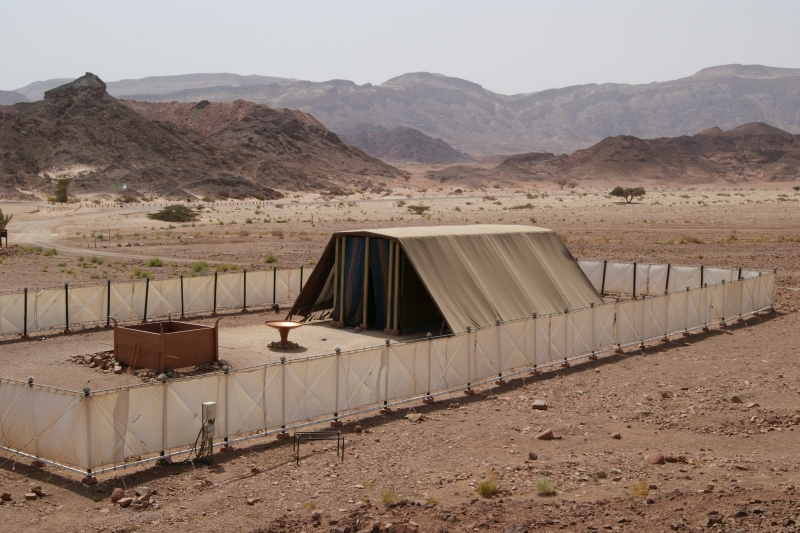
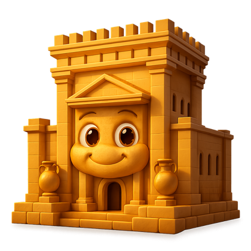
Os Templos de Jerusalém
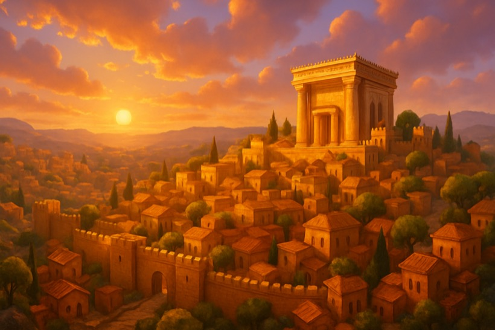
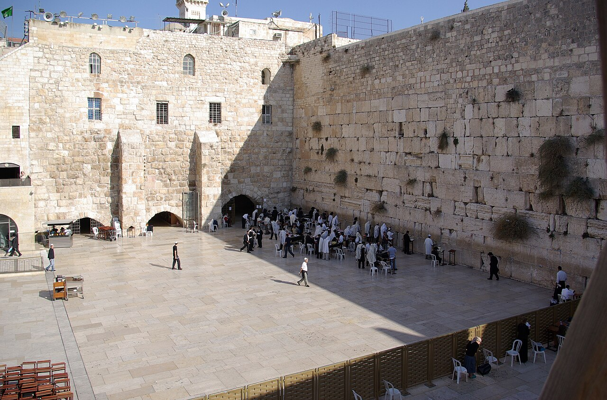
- Cerca de 400 anos depois, o rei Salomãoergueu o primeiro Temploem Jerusalém, feito de pedrase revestido de ouro e cedro.
- Foi destruído em 586 a.C.pelos babilônios, e a Arca da Aliança desapareceu.
- Ciro, rei da Pérsia, permitiu o retorno e a construção do segundo Templo (menor).
- O rei Herodesreformou o templo (19 a.C.). A última destruição foi em 70 d.C.pelos romanos.
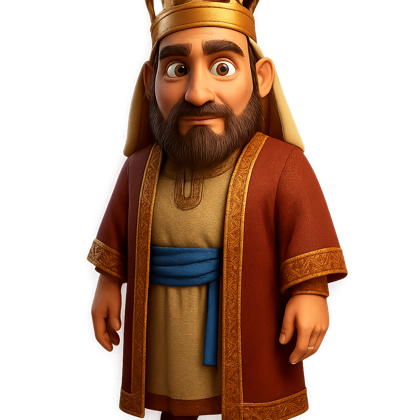
A formação do Reino de Israel
Depois de Moisés veio Josué, e depois os juízes (líderes só em momentos de perigo). O povo quis ter um rei como os outros povos. O profeta Samuelungiu o primeiro rei. Foram três reis famosos:

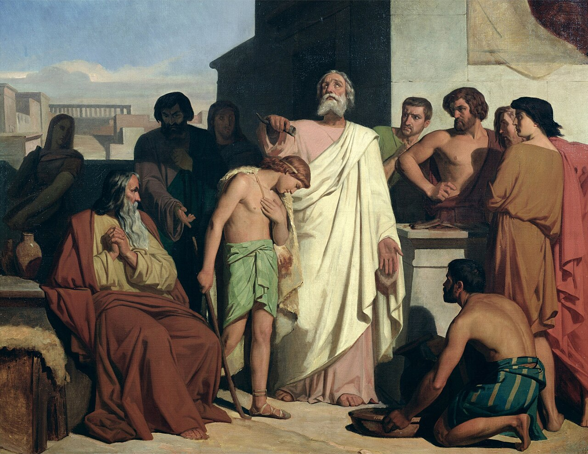
- Saul — o rei rebelde:reino atacado pelos filisteus (episódio de Golias × Davi). Afastou-se dos conselhos de Samuel/Deus, e por isso Deus passou o reino para outro.
- Davi — o rei guerreiro:era pastor, filho de Jessé, ungido em Belém. Venceu o gigante Goliascom uma pedra. Tornou Jerusaléma capital. Foi impedido de construir o Templo (pelo profeta Natã).
- Salomão — o rei sábio:filho de Davi, pediu a Deus sabedoria (o caso das duas mães!). Recebeu a rainha de Sabá. Construiu o Templo; o reino prosperou.
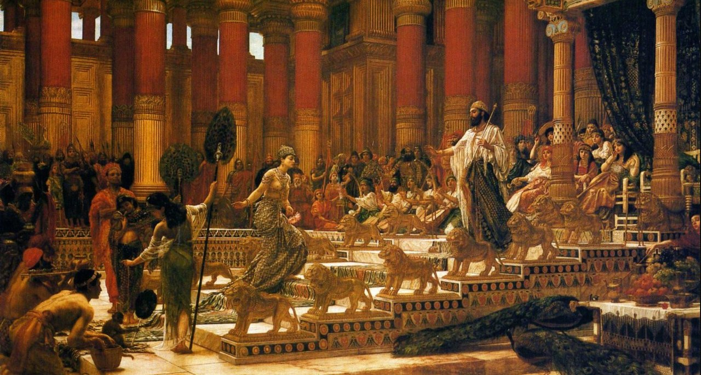
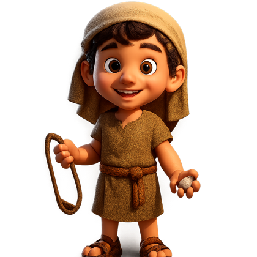
O reino dividido
Após Salomão, seu filho Roboãonão ouviu os conselheiros idosos e aumentou a carga de trabalho. O povo se revoltou e o reino se partiu em dois:
- Reino de Israel (Norte):10 tribos, líder Jeroboão, capital Samaria. Durou ~200 anos, conquistado em 722 a.C. pela Assíria.
- Reino de Judá (Sul):2 tribos (Judá e Benjamim), capital Jerusalém. Durou ~400 anos, conquistado em 586 a.C. pela Babilônia (rei Nabucodonosor).
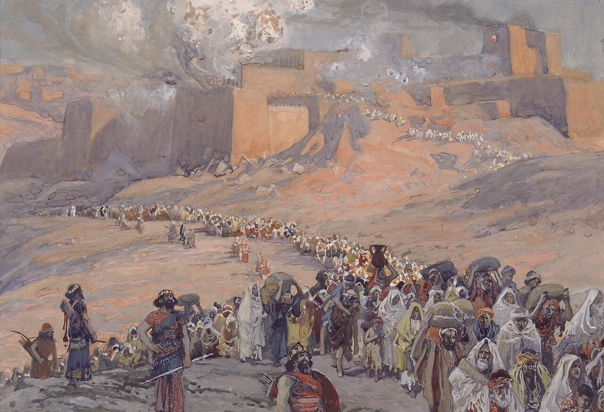
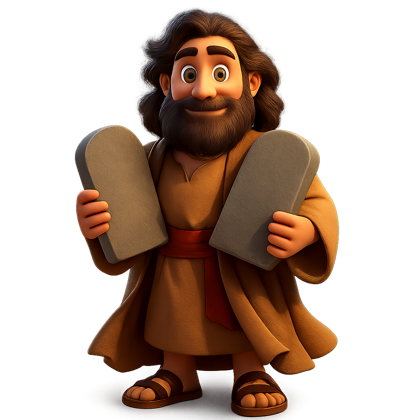
Dominações e a diáspora
O povo viveu o exílio na Babilônia (70 anos) até Ciro permitir o retorno. Depois vieram os domínios persa, grego (Alexandre, o Grande, em 331 a.C.) e romano (Judá virou a província da Judeia). Em 132–135 d.C., o imperador romano Adrianoexpulsou os judeus (a diáspora judaica) e mudou o nome para Síria Palestina.
O legado e a Reforma Protestante
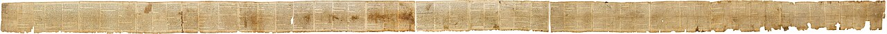
No domínio romano surgiu Jesus Cristo, e seus ensinamentos deram origem ao cristianismo. Judeus e cristãos compartilham o Antigo Testamento; os cristãos têm também o Novo Testamento (Evangelhos, Atos, Epístolas/Cartas e Apocalipse).
Muito tempo depois, em 1517, o monge Martinho Luteroescreveu as 95 Tesese iniciou a Reforma Protestante. Traduziu a Bíblia para o alemão, e a prensa de Gutenbergajudou a espalhar os textos. No Brasil, missionários protestantes chegaram em 1557 (franceses, RJ) e 1630 (holandeses, Nordeste).
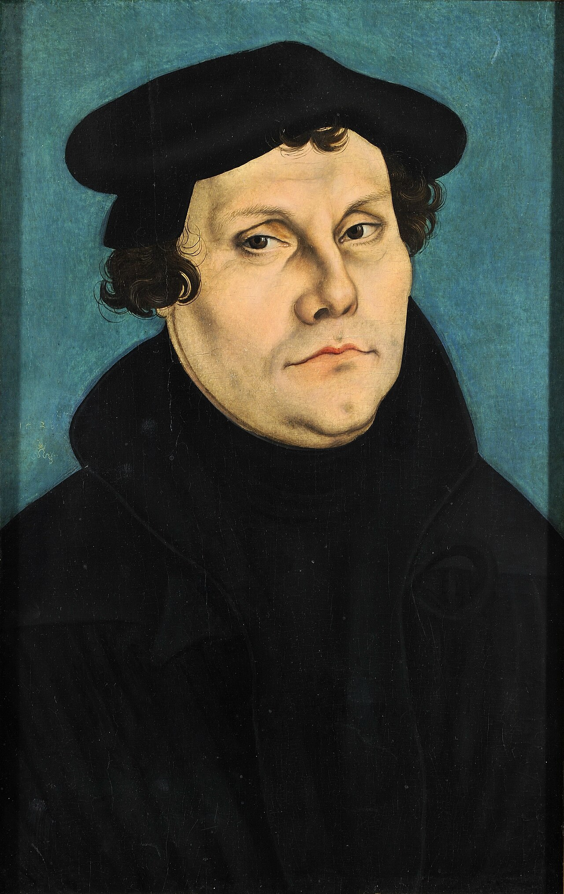
Mapa 1 — A jornada de Abraão
Abraão saiu de Ur (Mesopotâmia), subiu pelo "Crescente Fértil" e desceu até Canaã. Depois, por causa da fome, o povo desceu ao Egito. (Este é o mesmo mapa do seu livro! )
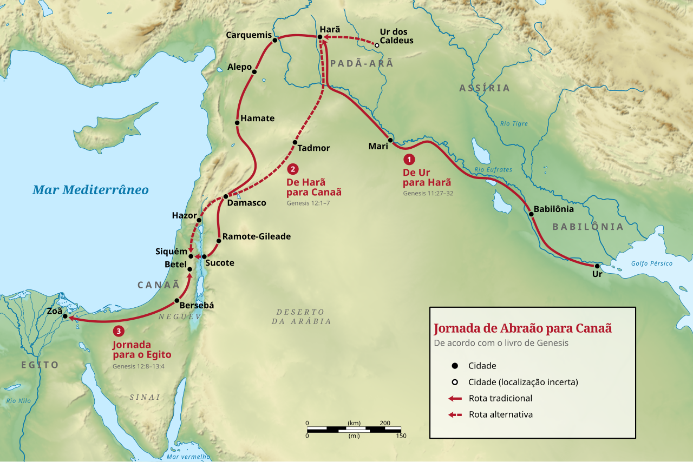
Mapa 2 — As doze tribos de Israel
Os 12 filhos de Jacó deram origem às 12 tribos, cada uma com seu território na Terra Prometida.
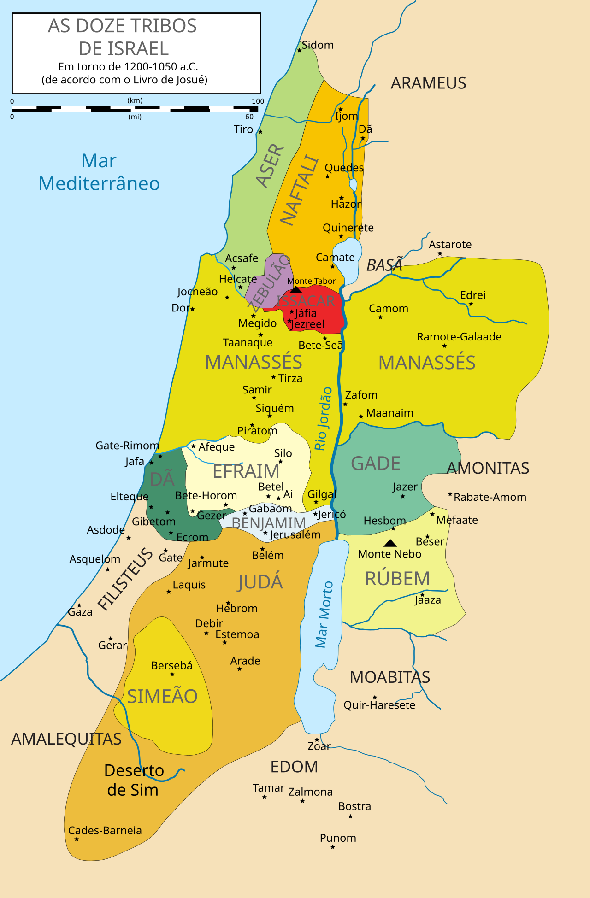
Mapa 3 — O reino unido (Saul e Davi)
No tempo de Saule Davi, as tribos estavam unidas num só reino, com capital em Jerusalém. Repare nos vizinhos: filisteus, moabitas, edomitas...
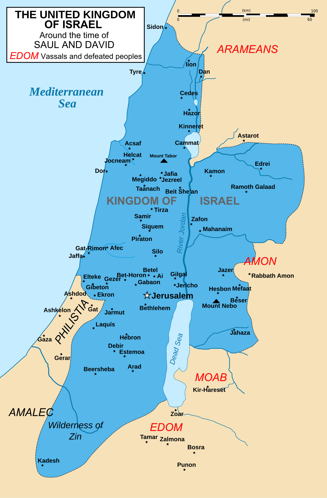
Mapa 4 — O reino dividido: Israel e Judá
Depois de Salomão, o reino se partiu: Israelao norte (azul, capital Samaria) e Judáao sul (amarelo, capital Jerusalém).
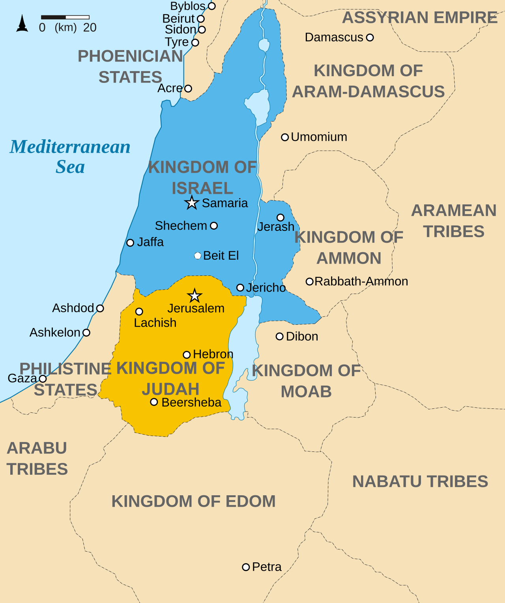
Flashcards
Responda na cabeça ANTES de virar. Acertou? "Já sei ". Esqueceu? "Revisar " — ele volta no fim.
Quiz do Deserto
Jogo de Ligar
Toque numa palavra da esquerda e depois no par certo da direita.
Numere a ordem certa
Escreva no quadradinho o número de cada acontecimento, do mais antigo (1) ao mais novo (8). Depois clique em Conferir!
Complete as frases
Escolha a palavra certa do banco e escreva em cada espaço.
Caça-Palavras
Arraste do começo ao fim da palavra (em linha ou diagonal). Encontre todas!
Cruzadinha
Leia as dicas e preencha. As letras verdes mostram que acertou!
Horizontais
Verticais
Jogo da Memória
Ache os pares: a pessoa combina com o que ela fez na história!
Desafio Faraó (nível difícil)
Perguntas mais cabeçudas. Cada acerto vale XP em dobro!
Meu Álbum de Figurinhas
Complete os jogos e suba de nível pra colecionar todas! Ficam salvas no aparelho.